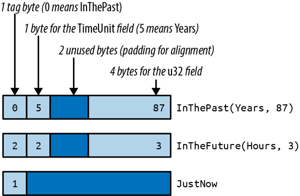
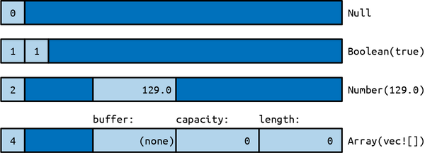
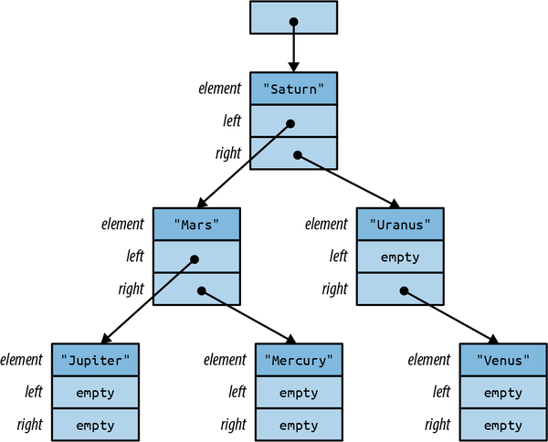

第 10 章 枚举与模式
令人惊讶的是，那些看似荒谬的计算机概念，其实在某种程度上还是挺有道理的（比如，将 lambda 表达式的缺失视为一种“剥夺”）。
本章的第一个主题非常有趣，因为它历史悠久，几乎与山脉一样古老。我很乐意以合理的价格帮助您快速完成许多任务。而且，它在不同的文化中有着不同的名称。不过，它并不是什么邪恶的东西。实际上，它是一种用户自定义的数据类型，在 ML 和 Haskell 中被称为“和型”、“区分联合”或“代数数据类型”。在 Rust 语言中，它们被称为“枚举类型”，或者简称“enums”。与“魔鬼”不同，这种类型非常安全，而且它们所要求的代价也不算太高。
C++和 C#都有枚举类型；你可以利用枚举来定义自己的类型，其数值是一组具有名称的常量。例如，你可以定义一个名为 Color 的类型，其数值包括 Red 、 Orange 、 Yellow 等。在 Rust 中也有类似的枚举类型。但 Rust 的枚举功能更为强大。Rust 的枚举还可以包含数据，甚至可以是不同类型的数据。例如，Rust 的 Result<String, io::Error> 类型就是一个枚举类型；这样的数值可以是包含 String 的 Ok 类型，也可以是包含 io::Error 的 Err 类型。这超出了 C++和 C#枚举的能力范围。更像是 C 语言中的 union 类型——不过与联合体不同，Rust 的枚举类型具有类型安全性。
枚举在需要处理一个确切的值时非常有用。不过，使用枚举的缺点是，你必须通过模式匹配来安全地访问数据，这一点在本章的后半部分会有详细的介绍。
如果你曾经使用过 Python 中的解构操作或 JavaScript 中的结构化处理，那么模式这个词对你来说应该也不陌生。不过，Rust 中的模式更加高级。Rust 的模式有点类似于正则表达式，可以用于判断一个值是否具有特定的形态。它们还可以一次性从结构体或元组中提取多个字段到局部变量中。就像正则表达式一样，Rust 的模式非常简洁，通常只需要一行代码就能实现功能。
这一章首先介绍了枚举的基础概念，说明了如何将数据与枚举变量关联起来，以及枚举如何存储在内存中。接着，我们会介绍 Rust 中的模式声明和 match 语句，这些工具可以简洁地根据枚举、结构体、数组和切片来指定逻辑。此外，模式还可以包含引用、移动操作以及 if 条件语句，从而使其功能更加强大。
枚举类型
很简单，C 风格的枚举非常直观：
enumOrdering{Less,Equal,Greater,}
这个枚举声明了一个类型 Ordering ，该类型有三种可能的取值，分别称为 variant 或 constructor： Ordering::Less 、 Ordering::Equal 和 Ordering::Greater 。这个特定的枚举是标准库的一部分，因此 Rust 代码可以直接导入它使用。
usestd::cmp::Ordering;fncompare(n:i32,m:i32)->Ordering{ifn<m{Ordering::Less}elseifn>m{Ordering::Greater}else{Ordering::Equal}}
或者与其所有构造函数一起：
usestd::cmp::Ordering::{self,*};// `*` to import all childrenfncompare(n:i32,m:i32)->Ordering{ifn<m{Less}elseifn>m{Greater}else{Equal}}
在导入了构造函数之后，我们可以写成 Less 而不是 Ordering::Less 等等。不过，由于这种写法不够直观，因此通常建议除非真的有必要让代码更易于阅读，否则不要使用这种写法。
在内存中，C 风格枚举的值被存储为整数形式。有时需要告诉 Rust 应该使用哪些整数来表示这些值：
enumHttpStatus{Ok=200,NotModified=304,NotFound=404,...}
否则，Rust 会为你分配这些数字，从 0 开始。
默认情况下，Rust 使用内置的最小整数类型来存储 C 风格的枚举类型。大多数枚举类型都只需要一个字节即可表示。
assert_eq!(size_of::<Ordering>(),1);assert_eq!(size_of::<HttpStatus>(),2);// 404 doesn't fit in a u8
你可以通过在枚举中添加 #[repr] 属性来覆盖 Rust 对内存中表示的选择。有关详细信息，请参见“查找共同的数据表示方式”部分。
可以将 C 风格的枚举类型转换为整数类型：
assert_eq!(HttpStatus::Okasi32,200);
不过，从整数类型到枚举类型的强制类型转换则不允许这样做。与 C 语言和 C++不同，Rust 保证枚举值始终只能是 enum 声明中明确指定的那个值之一。从整数类型到枚举类型的未检查类型转换可能会破坏这一保证，因此这是不允许的。你只能采用自己的检查型转换方式来实现这种转换。
fnhttp_status_from_u32(n:u32)->Option<HttpStatus>{matchn{200=>Some(HttpStatus::Ok),304=>Some(HttpStatus::NotModified),404=>Some(HttpStatus::NotFound),..._=>None,}}
或者可以使用 enum_primitive crate。它包含一个宏，可以自动生成这种转换代码。
与结构体类似，编译器也会为你实现诸如 == 这样的运算符功能，不过你还是得自己去使用它们。
#[derive(Copy, Clone, Debug, PartialEq, Eq)]enumTimeUnit{Seconds,Minutes,Hours,Days,Months,Years,}
枚举也可以拥有方法，就像结构体一样：
implTimeUnit{/// Returns the plural noun for this time unit.fnplural(self)->&'staticstr{matchself{TimeUnit::Seconds=>"seconds",TimeUnit::Minutes=>"minutes",TimeUnit::Hours=>"hours",TimeUnit::Days=>"days",TimeUnit::Months=>"months",TimeUnit::Years=>"years",}}/// Returns the singular noun for this time unit.fnsingular(self)->&'staticstr{self.plural().trim_end_matches('s')}}
在 C/C++语言中，有时会用枚举来声明一组相关的整数常量。例如，通常会用一个整数来表示每个位对应的布尔选项，通过位运算中的与和或操作来实现这一点；有时还会用 enum 的方式来声明这些位。
// C/C++ exampleenumopen_flags_t{READ=1<<0,WRITE=1<<1,CREATE=1<<2,...};intfd=open_file("jokes/dad.txt",WRITE|CREATE);
这个习语无法直接翻译成 Rust 中的枚举类型。相反，应该使用整数类型和常量来表示数据，如下所示；或者可以使用 bitflags crate 这个包，它可以帮助你定义适合这种用途的封装整数的结构体。
typeOpenFlags=u32;constREAD:OpenFlags=1<<0;constWRITE:OpenFlags=1<<1;constCREATE:OpenFlags=1<<2;...letflags=WRITE|CREATE;
关于 C 风格的枚举，就介绍到这里吧。更有趣的 Rust 枚举类型是那些包含数据的变体。我们将会展示这些数据是如何在内存中存储的，如何通过添加类型参数使其具有通用性，以及如何从枚举值构建复杂的数据结构。
带有数据的枚举类型
一些程序确实需要以毫秒为单位显示精确的日期和时间，但对于大多数应用程序来说，使用类似“两个月前”这样的近似表述会更方便用户使用。我们可以编写一个枚举类来帮助实现这一点，使用之前定义的枚举类型即可。
/// A timestamp that has been deliberately rounded off, so our program/// says "6 months ago" instead of "February 9, 2016, at 9:49 AM".#[derive(Copy, Clone, Debug, PartialEq)]enumRoughTime{InThePast(TimeUnit,u32),JustNow,InTheFuture(TimeUnit,u32),}
在这个枚举中，有两个变体分别接受参数。这些变体被称为“元组变体”。与元组结构体类似，这些构造函数也是用于创建新的 RoughTime 值的函数。
letfour_score_and_seven_years_ago=RoughTime::InThePast(TimeUnit::Years,4*20+7);letthree_hours_from_now=RoughTime::InTheFuture(TimeUnit::Hours,3);
枚举也可以有结构体变体，这些变体包含具有命名字段的结构体，与普通结构体类似。
enumShape{Sphere{center:Point3d,radius:f32},Cuboid{corner1:Point3d,corner2:Point3d},}letunit_sphere=Shape::Sphere{center:ORIGIN,radius:1.0,};
总的来说，Rust 有三种枚举变量的类型，这与前一小节中介绍的结构体类型类似。没有数据的变量类型相当于类似单元体的结构体。元组类型在外观和功能上都与元组结构体相同。而结构体变量则具有花括号和具有名称的字段。一个枚举类型可以包含这三种类型的变量。
enumRelationshipStatus{Single,InARelationship,ItsComplicated(Option<String>),ItsExtremelyComplicated{car:DifferentialEquation,cdr:EarlyModernistPoem,},}
内存中的枚举类型
在内存中，包含数据的枚举类型被存储为一个小整数标签，同时还会占用足够的内存来保存最大情况下枚举项的所有字段。这个标签字段是供 Rust 内部使用的，它记录了创建该值的构造函数，从而可以知道该值包含哪些字段。
截至撰写本文时， RoughTime 的占用字节数为 8 个，如图 10-1 所示。

图 10-1. 内存中的 RoughTime 值
Rust 并没有对枚举的布局做出明确说明，不过，为了给未来的优化留下空间，还是可以灵活处理枚举的布局问题。在某些情况下，可以将枚举的字段进行更高效的打包处理。例如，Rust 编译器可以优化某些枚举的标签字段，这一点我们稍后会看到。
利用枚举类型实现丰富的数据结构
枚举类型也非常适用于快速实现树形数据结构。例如，假设一个 Rust 程序需要处理任意的 JSON 数据。在内存中，任何 JSON 文档都可以被表示为这种 Rust 类型的值。
usestd::collections::HashMap;enumJson{Null,Boolean(bool),Number(f64),String(String),Array(Vec<Json>),Object(Box<HashMap<String,Json>>),}
这不是一个假设的例子。在 serde_json 这个用于 Rust 结构体的序列化库中可以找到一个非常类似的枚举类型。 serde_json 是 crates.io 上下载量最高的库之一。
位于 HashMap 周围的 Box 符号，实际上只是为了让所有 Object 类型的值看起来更紧凑一些。在内存中， Json 类型的值需要占用四个机器字位。 String 和 Vec 类型的值则只需要三个字位，而 Rust 还额外添加了一个标签字节。 Null 和 Boolean 类型的值由于包含的数据不足以占用那么多空间，但所有 Json 类型的值都必须具有相同的尺寸。多余的空间也就被闲置了。图 10-2 展示了 Json 类型的值在内存中的实际表现形式。
而 HashMap 甚至更大。如果为每一个 Json 值都预留出空间的话，那么这些变量就会变得非常庞大，大概需要八个字左右才能表示完。不过， Box<HashMap> 只是一个单词而已：它只是一个指向堆内存中数据的指针。我们可以通过将更多的字段封装起来，让 Json 变得更加紧凑。

图 10-2. 内存中的 Json 值
这里令人惊讶的是，设置这一功能竟然如此简单。在 C++中，可以编写一个类来实现这个功能：
classJSON{private:enumTag{Null,Boolean,Number,String,Array,Object};unionData{boolboolean;doublenumber;shared_ptr<string>str;shared_ptr<vector<JSON>>array;shared_ptr<unordered_map<string,JSON>>object;Data(){}~Data(){}...};Tagtag;Datadata;public:boolis_null()const{returntag==Null;}boolis_boolean()const{returntag==Boolean;}boolget_boolean()const{assert(is_boolean());returndata.boolean;}voidset_boolean(boolvalue){this->~JSON();// clean up string/array/object valuetag=Boolean;data.boolean=value;}...};
目前，我们仅用 30 行代码就完成了初步的开发工作。这个类需要构造函数、析构函数以及赋值运算符。另一种方法是创建类层次结构，包含一个基类 JSON ，以及多个子类 JSONBoolean 、 JSONString 等。无论采用哪种方式，当项目完成之后，我们的 C++ JSON 库将拥有十几种方法。不过，其他程序员可能需要一些时间来理解和使用这个库。而整个 Rust 枚举类型也仅用八行代码就实现了。
通用枚举
枚举类型可以是通用的。标准库中的两个例子就是语言中使用最频繁的两种数据类型：
enumOption<T>{None,Some(T),}enumResult<T,E>{Ok(T),Err(E),}
这些类型到现在已经相当熟悉了，而通用枚举的语法与通用结构体是相同的。
另一个不太明显的细节是，当类型 T 是引用、 Box 或其他智能指针类型时，Rust 可以省略 Option<T> 的标签字段。由于这些指针类型都不允许为 0，因此 Rust 可以将 Option<Box<i32>> 表示为一个机器字： None 对应 0， Some 对应的则是非 0 值。这样， Option 这类类型就类似于 C 或 C++中的指针值，可以设置为空值。不过，Rust 的类型系统要求在使用 Option 的内容之前，必须先确认其是否为 Some 类型。这实际上消除了对空指针的解引用操作。
一些通用数据结构可以用几行代码就构建出来。这里有一个 BinaryTree 类型，它可以存储任意数量的 T 类型的值：
// An ordered collection of `T`s.enumBinaryTree<T>{Empty,NonEmpty(Box<TreeNode<T>>),}// A part of a BinaryTree.structTreeNode<T>{element:T,left:BinaryTree<T>,right:BinaryTree<T>,}
这两个定义中包含了大量的信息。因此，我们会花时间逐字翻译这些代码。每个 BinaryTree 值要么是 Empty ，要么是 NonEmpty 。如果是 Empty ，那么说明该值根本不包含任何数据。而如果为 NonEmpty ，那么它包含一个 Box ，即指向堆分配内存的指针 TreeNode 。
图 10-3 展示了类型 BinaryTree<&str> 的值的示意图。与 Option<Box<T>> 类似，Rust 语言也取消了标签字段的使用，因此 BinaryTree 的值实际上就只是一个机器字。
在树结构中构建任何一个特定的节点都是相当简单的：
useself::BinaryTree::*;letjupiter_tree=NonEmpty(Box::new(TreeNode{element:"Jupiter",left:Empty,right:Empty,}));
可以用较小的树木来构建更大的树木：
letmars_tree=NonEmpty(Box::new(TreeNode{element:"Mars",left:jupiter_tree,right:mercury_tree,}));
当然，这个操作会将 jupiter_tree 和 mercury_tree 的所有权转移给它们的新父节点。

图 10-3. 一个包含六个字符串的 BinaryTree
树的其余部分也遵循相同的模式。根节点与其他节点并无不同：
lettree=NonEmpty(Box::new(TreeNode{element:"Saturn",left:mars_tree,right:uranus_tree,}));
在本章的后面部分，我们将介绍如何在一个 BinaryTree 类型的对象上实现 add 方法，这样我们就能这样书写代码了：
letmuttree=BinaryTree::Empty;forplanetinplanets{tree.add(planet);}
无论你使用哪种语言，在 Rust 中创建像 BinaryTree 这样的数据结构都需要一定的练习。一开始可能会不清楚应该把 Box 放在哪里。一种方法是像图 10-3 那样画出一个示意图，展示出在内存中各个元素的布局。然后从示意图反向推导出对应的代码。每个矩形集合就是一个结构体或元组；每个箭头则是一个 Box 或其他智能指针。确定每个字段的类型有点像解谜游戏，但其实是可以应付得来的。解开这个谜题的回报就是能够控制程序的内存使用方式。
现在来谈谈我们开头提到的“价格”问题。枚举的标签字段需要占用一些内存空间，最坏的情况下甚至可达 8 字节，但这一开销通常可以忽略不计。不过，枚举真正的缺点在于：Rust 代码不能忽视这些限制，不能尝试访问那些实际上可能不存在的字段。
letr=shape.radius;// error: no field `radius` on type `Shape`
访问枚举中数据的唯一安全方式就是使用模式。
模式/样式
还记得本章前面提到的 RoughTime 类型的定义吗：
enumRoughTime{InThePast(TimeUnit,u32),JustNow,InTheFuture(TimeUnit,u32),}
假设你有一个 RoughTime 值，想要在网页上显示它。你需要访问该值中的 TimeUnit 和 u32 字段。不过，Rust 不允许直接访问这些字段，因为 rough_time.0 和 rough_time.1 可能并不是该值的字段。那么，该如何获取这些数据呢？
你需要一个 match 表达式：
1fnrough_time_to_english(rt:RoughTime)->String{2matchrt{3RoughTime::InThePast(units,count)=>{4format!("{count} {} ago",units.plural())5}6RoughTime::JustNow=>{7"just now".to_string()8}9RoughTime::InTheFuture(units,count)=>{10format!("{count} {} from now",units.plural())11}12}13}
match 执行模式匹配操作；在这个例子中，这些模式指的是出现在第 3、6 和 9 行的 => 符号之前的那些部分。与 RoughTime 值相匹配的模式，其实就相当于用于生成 RoughTime 值的表达式。这并非偶然。表达式能够生成值，而模式则负责处理这些值。这两种语法有很多共同之处。
让我们来看看当这个 match 表达式被执行时会发生什么。假设 rt 是 RoughTime::InTheFuture(TimeUnit::Months, 1) 的值。Rust 首先会尝试将这个值与第 3 行中的模式进行匹配。如图 10-4 所示，这次匹配失败。

图 10-4. 不符合要求的 RoughTime 值和模式
第 3 行和第 6 行的模式不匹配。但是第 9 行的模式是有效的（见图 10-5）。

图 10-5. 成功的匹配结果
当模式中包含诸如 units 和 count 这样的简单标识符时，这些标识符在后续代码中会成为局部变量。模式中出现的任何内容都会被复制到这些新变量中。Rust 将 TimeUnit::Months 存储到 units 中，将 1 存储到 count 中，然后执行第 10 行代码，最终返回字符串 "1 months from now" 。
那个输出结果存在一些小的语法问题，可以通过在 match 中添加另一个参数来修复这个问题。
RoughTime::InTheFuture(unit,1)=>{format!("a {} from now",unit.singular())}
只有当 count 字段的值等于 1 时，这个模式才有效。注意，这个新的代码必须放在第 9 行之前。如果将其放在最后，Rust 编译器根本无法处理这个模式，因为第 9 行中的模式会匹配所有 InTheFuture 的值。如果你犯这种错误，Rust 编译器会发出“无法到达的模式”的警告。
正如这个例子所示，模式匹配与枚举类型相辅相成，甚至能够测试枚举所包含的数据。因此， match 可以作为一种强大的、灵活的替代方案来替代 C 语言中的 switch 语句。到目前为止，我们看到的只是那些与枚举值匹配的模式而已。实际上，Rust 的模式是一种独立的语言，详见表 10-1。在本章的剩余部分，我们将重点介绍表中所列出的那些特性。
| 模式类型 | 示例 | 备注 |
|---|---|---|
| 字面意思 |
100"name" |
与某个确切的值匹配；也允许使用 const 的名称 |
| 范围/幅度 |
0..100'a'..='z'256.. |
与范围内的任意值匹配 |
| 通配符 | _ |
与任何值匹配，并忽略该值 |
| 变量 |
namemut count |
可以匹配任何值，并将其移动到或复制到新的局部变量中。 |
ref 变量 |
ref fieldref mut field |
采用引用该匹配值的方式，而不是移动或复制它。 |
| 以子模式进行绑定 |
val @ 0..=99ref circle @ Shape::Circle { .. } |
将模式与 @ 右侧的内容匹配，使用左侧的变量名 |
| 枚举模式 |
Some(value)NonePet::Orca |
|
| 元组模式 |
(key, value)(r, g, b) |
|
| 数组模式 |
[a, b, c, d, e, f, g][heading, carom, correction] |
|
| 切片模式 |
[first, second][first, _, third][first, .., last][] |
|
| 结构模式 |
Color(r, g, b)Point { x, y }Card { suit: Clubs, rank: n }Account { id, name, .. } |
|
| 参考内容 |
&value&(k, v) |
与参考值匹配，并将其降位。 |
| 或者图案 |
'a' | 'A'Some("left" | "right" | "center") |
能够匹配任何一种模式 |
| Guard 表达式 | x if x * x <= r2 |
仅适用于 match 格式（在 let 等格式中无效） |
模式中的字面量、变量以及通配符
到目前为止，我们已经展示了如何使用枚举类型进行表达式操作。其他类型也可以被匹配到。当你需要像 C 语言中的` switch `这样的语句时，可以使用带有整数值的` match `。像` 0 `和` 1 `这样的整数字面量可以作为模式使用。
matchmeadow.count_rabbits(){0=>{}// nothing to say1=>println!("A rabbit is nosing around in the clover."),n=>println!("There are {n} rabbits hopping about in the meadow"),}
当草地上没有兔子时，模式 0 会匹配。当只有一只兔子时，模式 1 会匹配。如果有多只兔子，就会遇到第三种模式 n 。这个模式只是一个变量名而已，它可以匹配任何值，并且匹配到的值会被移动到新的局部变量中或被复制到新的局部变量中。因此，在这种情况下， meadow.count_rabbits() 的值会被存储到新的局部变量 n 中，然后我们就会打印这个变量的值。
其他字面量也可以被用作模式，包括布尔值、字符，甚至是字符串：
letcalendar=matchsettings.get_string("calendar"){"gregorian"=>Calendar::Gregorian,"chinese"=>Calendar::Chinese,"ethiopian"=>Calendar::Ethiopian,other=>returnparse_error("calendar",other),};
如果你需要一个可以泛用的模式，但并不关心匹配到的具体值，那么可以使用单个下划线的模式 _ ，也就是通配符模式：
letcaption=matchphoto.tagged_pet(){Pet::Tyrannosaur=>"RRRAAAAAHHHHHH",Pet::Samoyed=>"*dog thoughts*",_=>"I'm cute, love me",// generic caption, works for any pet};
通配符模式可以匹配任何值，但不会将其存储到任何位置。由于 Rust 要求每个 match 表达式都能处理所有可能的值，因此通常需要在最后使用通配符。即使你确信其余情况不会出现，也至少应该添加一个备用选项，也许是一个会引发 panic 的错误选项。
// There are many Shapes, but we only support "selecting"// either some text, or everything in a rectangular area.// You can't select an ellipse or trapezoid.matchdocument.selection(){Shape::TextSpan(start,end)=>paint_text_selection(start,end),Shape::Rectangle(rect)=>paint_rect_selection(rect),_=>panic!("unexpected selection type"),}
元组与结构体模式
元组模式与元组相匹配。当你需要将多个数据元素整合到同一个 match 中时，这种模式非常有用。
/// Converts an hour AM or PM to the 24-hour convention./// For example, "4 P.M." is 16, and "12 A.M." is 0.fnto_24_hour_time(hour:u32,half:DayHalf)->u32{match(hour,half){(12,DayHalf::Am)=>0,(hour,DayHalf::Am)=>hour,(12,DayHalf::Pm)=>12,(hour,DayHalf::Pm)=>12+hour,}}
结构模式与结构体表达式一样，也使用花括号来标识字段。每个字段都包含一个子模式。
matchballoon.location{Point{x:0,y:height}=>{println!("straight up {height} meters");}Point{x:x,y:y}=>{println!("at ({x}m, {y}m)");}}
假设 balloon.location 等于 Point { x: 30, y: 40 } 。像往常一样，Rust 会依次检查每个模式的每个组成部分（见图 10-6）。

图 10-6. 使用结构体进行模式匹配
第二个参数匹配上了，所以输出结果会是 at (30m, 40m) 。
在匹配结构体时，像 Point { x: x, y: y } 这样的模式很常见。不过，重复出现的名称会造成视觉上的混乱，因此 Rust 提供了这种简写方式： Point {x, y} 。其含义仍然相同。这种模式仍然会将点的 x 字段存储在一个新的局部变量 x 中，而将 y 字段则存储在一个新的局部变量 y 中。
即使使用缩写形式，要匹配一个大型结构体仍然很麻烦，因为我们实际上只需要关注其中的几个字段而已。
matchget_account(id){...Some(Account{id:_,status:_,name,language,// <--- the 2 things we care aboutaddress:_,birthday:_,eye_color:_,pet:_,security_question:_,hashed_innermost_secret:_,is_adamantium_preferred_customer:_,})=>language.show_custom_greeting(name),}
为了避免这种情况，可以使用 .. 来告诉 Rust，你并不关心其他任何字段。
Some(Account{name,language,..})=>{language.show_custom_greeting(name);}
匹配引用信息
正如我们所看到的，匹配一个不可复制的值确实能够改变该值。以那个例子为例，这样的代码将是无效的：
matchcurrent_user{...Some(Account{name,language,..})=>{ui.greet(&name,&language);ui.show_settings(¤t_user);// error: borrow of moved value}}
在这里，两个字段 name 和 language 被从 current_user 移动到了局部变量中。而 current_user 中的其余部分则被丢弃了。之后我们无法再引用它了。
如果 name 和 language 都是可复制的变量，那么 Rust 会直接复制这些字段，而不是进行移动操作。这样的话，这段代码就是正确的。但是，假设这两个变量是 String 类型的话，我们该怎么办呢？
最简单的解决办法就是让变量与 current_user 进行关联。
match¤t_user{// <-- note: added `&` here...Some(Account{name,language,..})=>{ui.greet(name,language);// <-- note: removed `&`s hereui.show_settings(¤t_user);// ok}}
由于我们现在使用的是引用方式，因此变量 name 和 language 实际上都引用了 current_user 中的相应字段。这就是为什么在调用 ui.greet 的那一行代码中，我们删除了两个 & 符号的原因。在原始代码中，我们是通过这些引用将数据传递给 String 变量 name 和 language 的。而在新代码中，这些变量已经变成了对 String 字段的引用，而 String 字段又属于 current_user 所拥有的字段。
在任何可以匹配某种类型的值的地方，你都可以使用 &T 或 &mut T 来进行匹配。在匹配模式中不需要特殊的语法规则，模式中的变量只是简单地引用了它们所匹配的值，而不是移动或复制操作。
参考模式
在模式中使用 ref 关键字来表示借用。在变量之前插入 ref ，可以让 Rust 仅借用对匹配值的引用，而不是移动或复制该值。例如，如果你要匹配一个包含多个可复制字段的结构体，但同时又希望匹配一个不可复制的字段，你可以这样使用模式： ref mut 借用 mut 的引用。
// Copy `id` and `status`, borrow `name`:Account{id,status,refname,..}=>...
一种解引用模式使用了 & 运算符。在模式的任何部分之前插入 & ，就能使其匹配一个引用，并解引用该引用。例如，假设我们有一个遍历字符串中字符的迭代器 chars ，并且有一个方法 chars.peek() ，它返回一个 Option<&char> ——即下一个字符的引用（如果有的话）。正如我们在第 15 章中会看到的，可窥视的迭代器实际上返回的是 Option<&ItemType> 。我们可以使用 & 模式来获取字符，使其以 char 的形式呈现，而不是 &char 形式。
matchchars.peek(){Some(&c)=>println!("coming up: {c:?}"),None=>println!("end of chars"),}
这种语法有点令人惊讶，因为 Rust 在这里使用的是指针操作，而通常我们使用的操作是 * 运算符，而不是 & 运算符。需要记住的是，模式和表达式本质上是对立的概念。例如，表达式 (x, y) 会将两个值组合成一个新的元组，而模式 (x, y) 则相反：它匹配一个元组，并提取其中的两个值。 & 也是如此。在表达式中， & 会创建一个引用；而在模式中， & 则匹配一个引用。
数组和切片模式
数组模式与数组相匹配。它们常被用来过滤掉一些特殊的情况，在处理那些根据位置有不同的意义的数组时非常有用。
例如，在将色调、饱和度和亮度（HSL）颜色值转换为红色、绿色、蓝色（RGB）颜色值时，当亮度为零或达到最大值时，颜色就变成了黑色或白色。我们可以使用 match 表达式来处理这些特殊情况。
fnhsl_to_rgb(hsl:[u8;3])->[u8;3]{matchhsl{[_,_,0]=>[0,0,0],[_,_,255]=>[255,255,255],...}}
切片模式是类似的，但与数组不同，切片的长度可以是可变的。因此，切片模式不仅在值上能够匹配，在长度上也能够匹配。在切片模式中， .. 可以匹配任意数量的元素。
fngreet_people(names:&[String]){matchnames{[]=>println!("Hello, nobody."),[a]=>println!("Hello, {a}."),[a,b]=>println!("Hello, {a} and {b}."),[a,..,b]=>println!("Hello, everyone from {a} to {b}."),}}
由于 names 指的是一个切片，所以在这个例子中，变量 a 和 b 实际上指的是切片中的各个元素。它们的类型都是 &String ，而不是 String 。
切片模式仅适用于切片，而不适用于向量。若需要匹配向量中的数据，可以使用 match &my_vec[..] 这种写法，这种方式可以引用包含所有元素的切片。
比赛卫兵
有时候，一个匹配动作需要满足一些额外的条件才能被视作有效的匹配。假设我们正在开发一个以六边形空间为单位的棋盘游戏，玩家点击以移动一个棋子。为了确认这个点击是有效的，我们可以尝试使用类似这样的逻辑：
fncheck_move(current_hex:Hex,click:Point)->game::Result<Hex>{matchpoint_to_hex(click){None=>{Err("That's not a game space.")}// try to match if user clicked the current_hex// (it doesn't work: see explanation below)Some(current_hex)=>{Err("You are already there! You must click somewhere else.")}Some(other_hex)=>{Ok(other_hex)}}}
这种写法是无效的，因为模式中的标识符会引入新的变量。例如，在 Some(current_hex) 这种表达式中，会创建一个新的局部变量 current_hex ，从而覆盖了原本的参数 current_hex 。Rust 系统会发出一些警告，指出这段代码中存在问题——尤其是 match 的最后一个分支是无法到达的。解决这个问题的方法之一就是在匹配分支中使用 if 表达式。
matchpoint_to_hex(click){None=>Err("That's not a game space."),Some(hex)=>{ifhex==current_hex{Err("You are already there! You must click somewhere else")}else{Ok(hex)}}}
不过，Rust 还提供了匹配守卫机制，即一些额外的条件判断，只有在这些条件满足时，匹配臂才会生效。这些条件以 if CONDITION 的形式书写，位于模式与臂的 => 标记之间。
matchpoint_to_hex(click){None=>Err("That's not a game space."),Some(hex)ifhex==current_hex=>{Err("You are already there! You must click somewhere else")}Some(hex)=>Ok(hex),}
如果模式匹配了，但条件不成立，那么匹配会继续进行到下一个分支。
匹配多种可能性
如果以 pat1 | pat2 为形式的模式中的任意一个子模式匹配，那么该模式也视为匹配。
letat_end=matchchars.peek(){Some('\r'|'\n')|None=>true,_=>false,};
使用 .. 或 ..= 可以匹配整个数值范围。
constKILO:usize=1024;constMEGA:usize=1024*KILO;constGIGA:usize=1024*MEGA;matchnum_bytes{0..KILO=>num_bytes.to_string(),KILO..MEGA=>format!("{}K",num_bytes/KILO),MEGA..GIGA=>format!("{}M",num_bytes/MEGA),GIGA..=>"big".to_string(),}
使用 ..= 运算符进行范围指定时，会包含末尾的值。因此， '0'..='9' 能够匹配所有的 ASCII 数字。
matchnext_char{'0'..='9'=>self.read_number(),'a'..='z'|'A'..='Z'=>self.read_word(),' '|'\t'|'\n'=>self.skip_whitespace(),_=>self.handle_punctuation(),}
以@图案进行绑定
最后， x @ pattern 与给定的 pattern 完全匹配。但在执行时，它不会为匹配值的部分创建单独的变量，而是会创建一个名为 x 的单一变量，并将整个值复制到该变量中。例如，假设你有这样的代码：
matchself.get_selection(){Shape::Rect(top_left,bottom_right)=>{optimized_paint(&Shape::Rect(top_left,bottom_right));}other_shape=>{paint_outline(other_shape.get_outline());}}
注意，第一种情况是将一个 Shape::Rect 值解压出来，然后在下一行重新构建出一个相同的 Shape::Rect 值。这种情况可以改写为使用 @ 模式：
rect@Shape::Rect(..)=>{optimized_paint(&rect);}
@ 这些模式在处理范围时也很有用：
matchchars.next(){Some(digit@'0'..='9')=>read_number(digit,chars),...},
它们还可以用来以切片模式获取“列表中的其余部分”：
let[first,second,others@..]=&ranked_teams[..]else{returnErr(TournamentError::NotEnoughTeams);};assert_eq!(others,&ranked_teams[2..]);
允许出现规律性的地方
虽然模式在 match 表达式中最为常见，但它们也出现在其他几个地方，通常用来替代标识符。其含义始终相同：Rust 通过模式匹配来分解值，而不是仅仅将值存储在一个变量中。
这些模式可以被用来……
// ...unpack a struct into three new local variablesletTrack{album,track_number,title,..}=song;// ...unpack a function argument that's a tuplefndistance_to((x,y):(f64,f64))->f64{...}// ...iterate over keys and values of a HashMapfor(id,document)in&cache_map{println!("Document #{id}: {}",document.title);}// ...automatically dereference an argument to a closure// (handy because sometimes other code passes you a reference// when you'd rather have a copy)letsum=numbers.fold(0,|a,&num|a+num);
每一种方式都能节省两到三行冗长的代码。在其他一些语言中也有类似的概念：在 JavaScript 中，这被称为“解构赋值”；而在 Python 中，则被称为“解包”。
请注意，在这四个例子中，我们都使用了那些必定会匹配到的模式。例如， Point3d { x, y, z } 模式可以匹配 Point3d 结构类型中的任何值， (x, y) 模式则可以匹配任何 (f64, f64) 组合，以此类推。在 Rust 中，那些总是能匹配到的模式被称为“不可辩驳模式”。这些模式是这里所展示的四个场景中唯一允许使用的模式（在 let 之后、函数参数中、 for 之后以及闭包参数中）。
可反驳的模式是指那些可能不匹配的模式，比如 Ok(x) ，因为它不会产生错误结果；或者 '0'..='9' ，因为它不会匹配到字符 'Q' 。这些可反驳的模式可以在 match 这种结构中使用，因为 match 就是为这类情况设计的：如果某个模式无法匹配，那么接下来会发生什么就一目了然了。前面的四个例子都展示了在 Rust 程序中如何使用这种模式，不过该语言并不允许出现匹配失败的情况。
也可以使用 if let 、 while let 和 let ... else 来表示可反驳的模式，这些符号可以用于……
// ...handle just one enum variant speciallyifletRoughTime::InTheFuture(_,_)=user.date_of_birth(){user.set_time_traveler(true);}// ...run some code only if a table lookup succeedsifletSome(document)=cache_map.get(&id){returnsend_cached_response(document);}// ...repeatedly try something until it succeedswhileletErr(err)=present_cheesy_anti_robot_task(){log_robot_attempt(err);// let the user try again (it might still be a human)}// ...manually loop over an iteratorwhileletSome(_)=lines.peek(){read_paragraph(&mutlines);}// ... exit early if a lookup failsletSome(account)=database.get_account(account_id)else{returnErr(Error::AccountNotFound);};
关于这些结构的详细信息，请参阅“if let”、“循环”以及“let else”相关内容。
最后，宏 matches!(value, pattern) 只是将一个值与某个模式进行比较，如果匹配，则返回 true 。这是一种简写形式：
matchvalue{pattern=>true,_=>false,}
对二叉树进行填充
之前我们承诺会展示如何实现一个方法，该方法可以将一个节点添加到该类型的 BinaryTree 中：
// An ordered collection of `T`s.enumBinaryTree<T>{Empty,NonEmpty(Box<TreeNode<T>>),}// A part of a BinaryTree.structTreeNode<T>{element:T,left:BinaryTree<T>,right:BinaryTree<T>,}
现在，你对这些模式的了解已经足够了，可以编写出这个方法了。不过，关于二叉搜索树的解释超出了本书的范围。对于那些已经熟悉这一主题的人来说，了解它在 Rust 语言中的实现方式还是很有价值的。
1impl<T:Ord>BinaryTree<T>{2fnadd(&mutself,value:T){3letmutplace=self;4whileletBinaryTree::NonEmpty(node)=place{5ifvalue<=node.element{6place=&mutnode.left;7}else{8place=&mutnode.right;9}10}11*place=BinaryTree::NonEmpty(Box::new(TreeNode{12element:value,13left:BinaryTree::Empty,14right:BinaryTree::Empty,15}));16}17}
第 1 行声明了我们将在 BinaryTree 这样的有序类型上定义一个方法。这种语法与我们在“使用 impl 定义方法”中用于定义通用结构体上的方法的语法相同。不过，这里有一个新的限制条件： T 必须是一个实现了 Ord 特性的类型。这一点使得我们在第 5 行能够使用比较运算符 <= 。
该方法使用局部变量 place 来指向树结构中当前的位置。第 4 行的代码会检查当前位置是否是 Empty 或 NonEmpty ：
whileletBinaryTree::NonEmpty(node)=place{
如果 place 表示一个非空的子树，那么这个模式是匹配的。由于 place 是一个可变的引用，所以 node 绑定到了 Box<TreeNode<T>> 的一个可变引用上。我们会执行循环体内的代码，然后移动到左子节点或右子节点。循环会持续进行，直到我们遇到一个 Empty 子树为止。
最后，第 11 到 15 行代码会修改 Empty 树，将其改为 NonEmpty 树。这里的 Box::new() 调用会在堆中分配一个新的 TreeNode 节点。该节点的左右子树分别都是 Empty 节点。
这种新的方法可以这样使用：
letmuttree=BinaryTree::Empty;tree.add("Mercury");tree.add("Venus");...
公共枚举与兼容性
这意味着修改一个公共枚举通常属于破坏性变更。如果你所在的包已经发布在 crates.io 上，那么像向 Error 枚举添加新变体这样的小幅度修改，就可能需要升级到更高版本。这种情况并不方便，因此 Rust 提供了部分解决方案。你可以为枚举添加 #[non_exhaustive] 属性，以表明未来可能会引入新的变体。例如，假设在你的 fern_sim 包中使用了这种类型： Error
#[non_exhaustive]pubenumError{PhylumNotFound,BrackenPipe,}
Rust 编译器还对用户代码施加了一定的限制，这是为了保持向后兼容性。如果你的 crate 的下游使用者试图通过列出 match 表达式中的所有变体来完全匹配这种类型，Rust 将会发出警告：
usefern_sim::Error;fnshould_retry(err:Error)->bool{matcherr{// error: non-exhaustive patterns: `_` not coveredError::PhylumNotFound=>false,Error::BrackenPipe=>true,}}
编译器会提示用户为 match 添加一个通用处理分支，就像 _ => todo!() 那样。对于这个函数，用户需要决定在出现无法识别的错误时是否应该执行 should_retry 中的处理程序。
#[non_exhaustive] 这种枚举类型也可以用于结构体以及枚举的单个变体，这样表明未来的版本可能会添加新的字段。这样一来，外部代码就无法匹配到没有 .. 的结构体或变体，也无法使用字面量来创建这些结构体或变体的新值（比如 UnitLike 、 TupleLike(v1, v2) 或 NamedField { f1, f2, f3 } 这样的语法，如果添加了新字段的话，这些语法就会失效）。对于结构体来说，这种用法相当于添加了一个私有字段。
在可能會后续增加的公共枚举中使用 #[non_exhaustive] 是一个好主意。不过，新版本的推出并非造成问题的唯一原因。实际上，对枚举的任何修改都属于破坏性变更。最谨慎的设计方式是将枚举封装在一个公共的 struct 中，同时让枚举本身保持私有状态。不过，这种方法会阻碍用户利用模式匹配功能。因此，你必须提供一些公共方法来弥补这一不足。
全局观/整体情况
在系统编程领域，Rust 的枚举类型或许是个新概念，但实际上它并非什么新鲜事物。这种概念以各种听起来学术性的名称存在，比如代数数据类型，它们已经在函数式编程语言中被使用了四十多年。不过，不清楚为什么在 C 语言体系中，如此少的语言会使用这种枚举类型。也许是因为，对于编程语言的设计者来说，结合变体、引用、可变性以及内存安全性的特性是非常具有挑战性的。而函数式编程语言则不需要这些特性。相比之下，C 语言虽然有变体、指针以及可变性，但安全性极低，以至于即使在 C 语言中，它也只能作为一种最后的解决方案。而 Rust 的借用检查器正是让这一切成为可能的关键所在，它让这四种特性能够毫无问题地结合在一起。
编程本质上就是数据处理。将数据转化为合适的形态，可以使得程序变得既高效又优雅，或者变成一个缓慢运行、充满虚拟方法调用的大混乱局面。
限制因素在于灵活性。枚举的最终用户无法扩展它以添加新的变体。只有修改枚举的声明才能添加变体。而这样做会导致现有代码出现故障。在某些情况下，为了简单起见，牺牲一些灵活性是明智的选择。毕竟，JSON 的结构本身是不允许改变的。而在某些情况下，当枚举出现变化时，重新考虑所有相关的使用场景正是我们所需要的。例如，当` enum `在编译器中被用来表示编程语言中的各种运算符时，添加一个新的运算符就需要修改所有处理运算符的代码。
不过，有时候需要更多的灵活性。对于这种情况，Rust 提供了特性，这是我们下一章要讨论的主题。